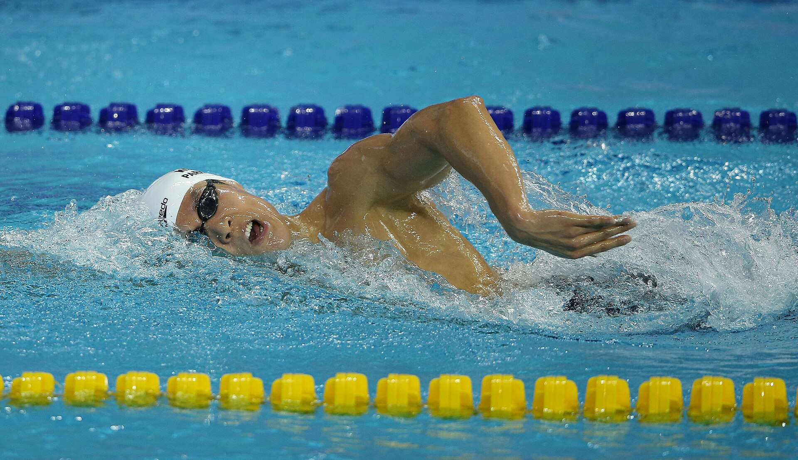
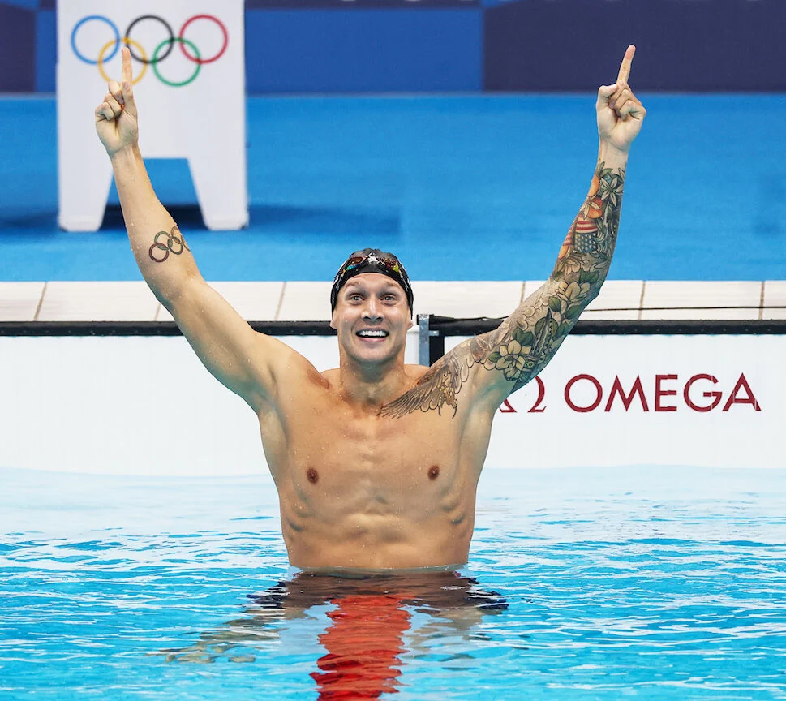

Freestlye is the most popular and the most generic style of swimming of the 4 recognised styles by the World Swimming Association or FINA.
Freestlye typically produces the fastest times and has a variety of lengths.
These include:

Freestlye
Backstroke
Breaststroke
Butterfly
Individual Medley